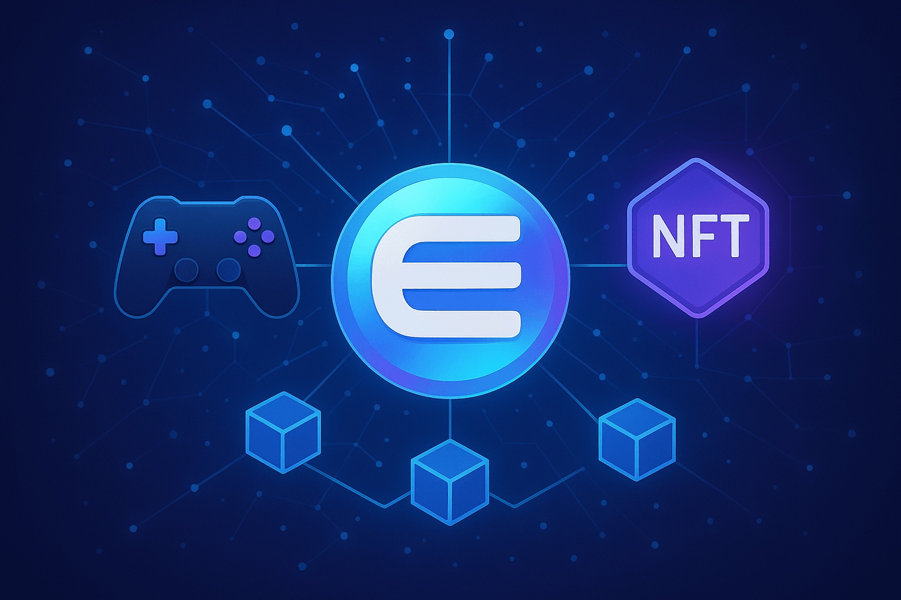

Enjin Coin Price Forecast for End of 2025: Detailed Analysis and Projections
The material in this article is for informational and educational purposes only and should not be taken as investment advice. Cryptocurrency carries inherent risks.
Introduction
As of August 20, 2025, 01:19 AM EEST, Enjin Coin (ENJ) trades at about $0.0687, with a market cap of roughly $129.23 million, placing it #309 among digital assets. ENJ, launched in 2017 by the Singapore-based firm Enjin (founded in 2009), is the governance and utility token of the Enjin Blockchain — a platform aiming to transform gaming with NFTs and blockchain solutions. With a user base exceeding 4 million and more than 1.2 billion NFTs minted, Enjin equips developers and gamers to create, manage, and trade digital assets. This article reviews ENJ’s potential performance by the end of 2025, examining both bullish and bearish scenarios, growth catalysts, and market risks in light of current ecosystem trends.
Current Situation
As of August 20, 2025, ENJ is valued at $0.0687, marking a 67.26% drop year-to-date from $0.21, reflecting a bearish broader market. Over the past 30 days, ENJ posted 20/30 (67%) green days with volatility at 11.16%. The Fear & Greed Index reads 72 (Greed), suggesting cautious optimism. Technicals such as a bullish engulfing pattern and an RSI of 63.02 (neutral) point toward a possible short-term rebound. Since its launch in September 2023, the Enjin Blockchain has processed more than 5,000 transactions per second, and 95% of ENJ’s supply is unlocked, showing maturity. Recent X activity highlights rising volume and higher lows, hinting at accumulation near $0.08–$0.085.
Price Predictions for End of 2025
Analysts’ outlooks for ENJ by December 2025 vary widely, reflecting its dependence on the NFT and gaming markets. Bearish calls, such as WalletInvestor’s, suggest a fall to $0.0140 (–80.58%) if downward pressure persists. Mid-range estimates from AMBCrypto and CoinCodex expect $0.069–$0.11, averaging around $0.098, while CoinPedia targets a peak of $0.16182. Optimistic projections — fueled by an altcoin season and Enjin Blockchain growth — include CCN’s $0.50, CoinEagle’s $4.75, and CoinLore’s $4.15. These scenarios rely heavily on market recovery and NFT adoption, though volatility remains a risk.
Factors Supporting Growth
- Enjin Blockchain Adoption: With proof-of-stake consensus and over 5,000 TPS, Enjin offers high scalability for NFT creation and trading.
- NFT and Gaming Growth: With 1.2+ billion NFTs minted, Enjin is well-positioned in the expanding web3 gaming world, powering projects like Etherscape.
- Community Involvement: Enjin’s 4M+ user base and active campaigns such as BeamBlitz QR increase engagement and visibility.
- Staking Incentives: Holders can stake ENJ for up to 28% APR, encouraging long-term commitment and securing the network.
- Market Sentiment: A possible altcoin rally in 2025, especially following Bitcoin’s halving, could lift ENJ’s valuation, as highlighted by Coinpedia.
Risks and Challenges
- High Volatility: ENJ’s 11.16% volatility and vulnerability to broader market swings may push its value down toward $0.02, as CCN warns.
- Regulatory Pressure: Tighter global rules on NFTs and blockchain gaming could curb Enjin’s growth.
- Strong Competition: Competitors like The Sandbox, Axie Infinity, and Decentraland pose threats to Enjin’s developer and investor base.
- GameFi Weakness: The prolonged downturn in GameFi since the LUNA collapse in 2022 continues to weigh on ENJ’s performance.
Volatility Analysis
Between July and August 2025, ENJ’s price moved between $0.0687 and $0.0971, with volatility at 11.16%. Technicals — including an RSI of 63.02 and a bullish engulfing signal — suggest a possible breakout above $0.085 if volume crosses $12M. Social activity points to accumulation, yet failure to breach $0.1284 resistance could send ENJ back to $0.0692 support. CoinLore notes that a surge in NFT use or an altcoin rally in Q2 2025 could yield a 40.10% gain, according to CoinCodex.

Conclusion
By December 2025, ENJ’s price could fall anywhere between $0.069 and $0.50, with more bullish projections extending as high as $4.75 if blockchain adoption and NFT gaming accelerate. Drivers such as scalability, staking, and community activity provide upside potential, while risks like volatility, regulations, and competition remain critical. Investors should carefully research and apply sound risk management before engaging with Enjin Coin.